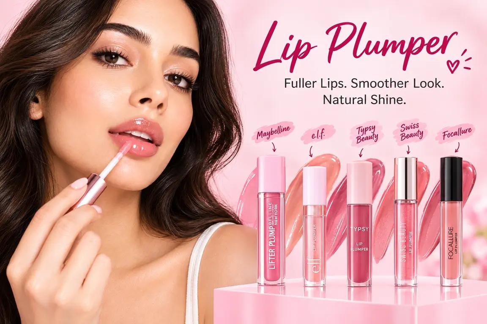
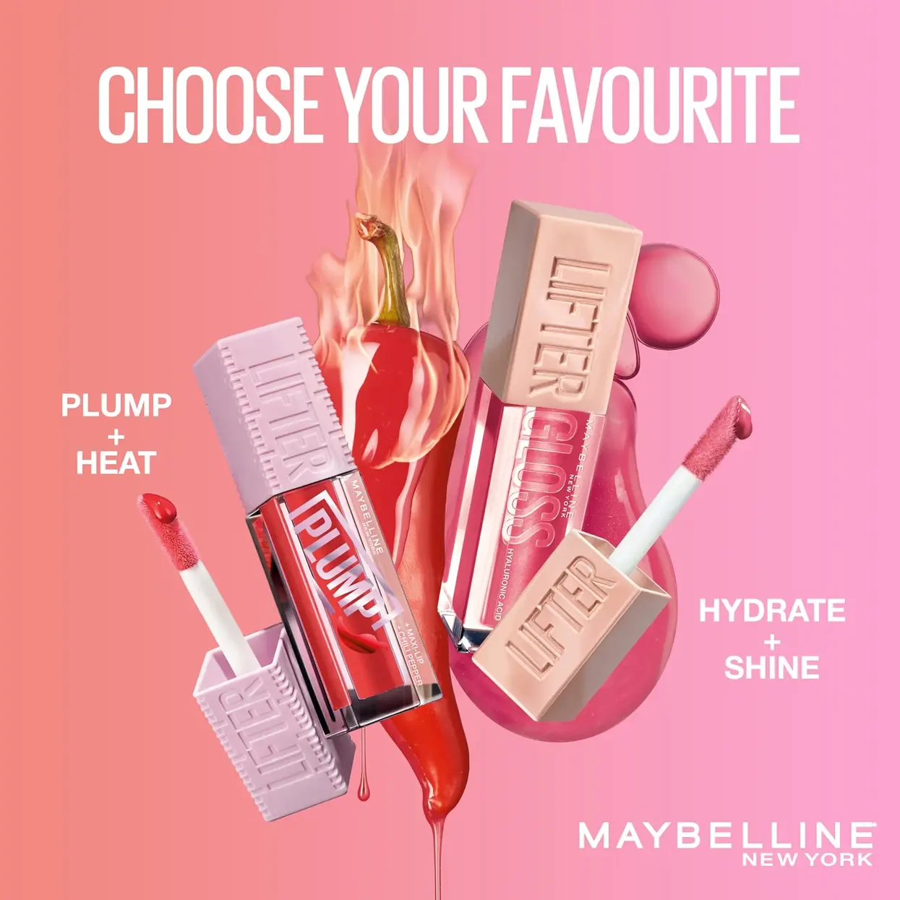
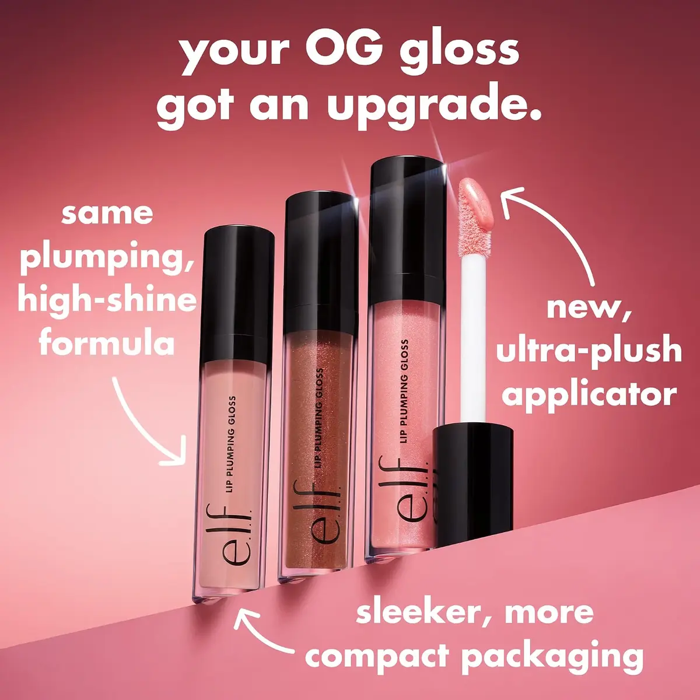
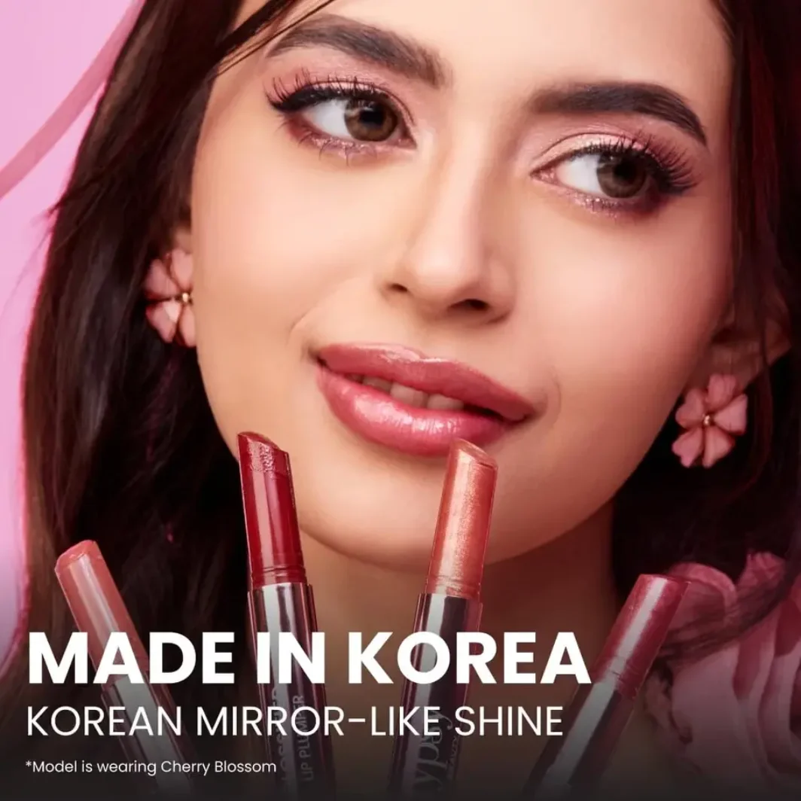
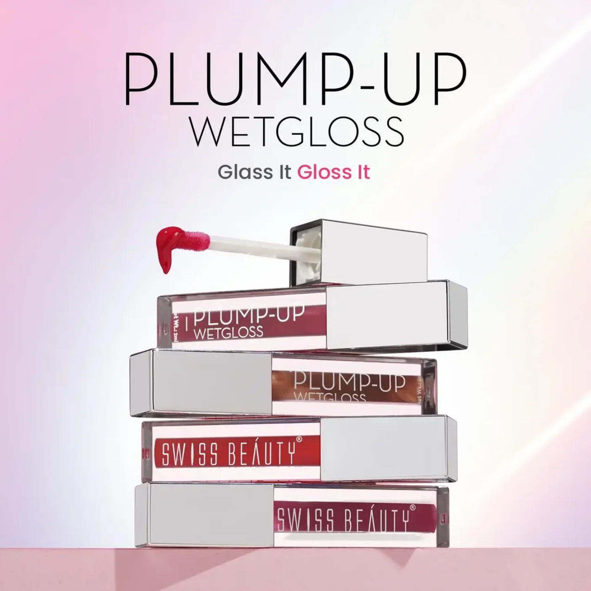
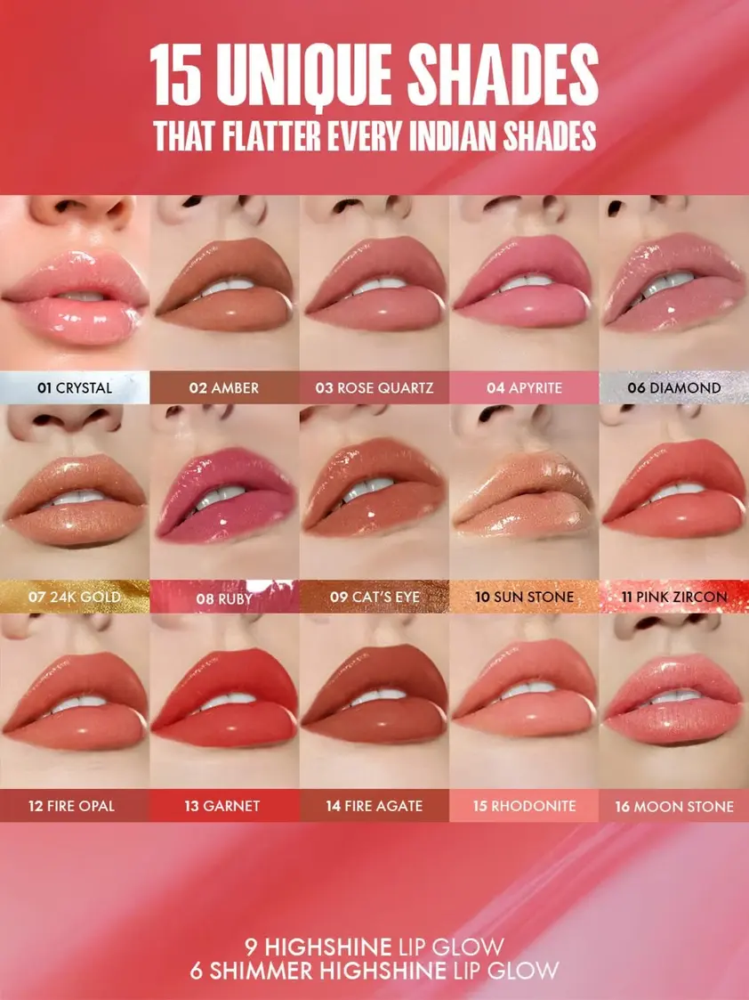

💋 Top 5 Best Lip Plumpers in India Under ₹1000 (Filler-Look Lips, No Needles)

Top 5 lip plumpers ranked by plump effect, shine, and value for Indian lips — 2026.
Want fuller-looking lips without a heavy lipstick or liner? A good lip plumper can create a smoother, glossier and more defined pout in just a few minutes. Unlike lip fillers, which are cosmetic procedures, lip plumpers are topical beauty products designed to give lips a temporarily fuller appearance through high-shine finishes, hydration and, in some formulas, a mild tingling or cooling sensation.
Some lip plumpers work mainly through reflective gloss that makes lips appear fuller, while others use ingredients such as peptides, hyaluronic acid, mint, menthol or warming ingredients to create a plumper-looking effect. The result is temporary rather than permanent, making lip plumpers an easy option for everyday makeup, parties, dates or special occasions.
If you're looking for the best lip plumper in India under ₹1000, we've compared five popular options for their plumping effect, shine, comfort, formula and value for money. Whether you prefer a more noticeable plumping sensation or a subtle, glossy fuller-lip effect, these picks can help you find a lip plumper that suits your budget and makeup style.
✨ Tips Before You Pick a Lip Plumper
- Sensitive or chapped lips: Choose a hyaluronic acid or peptide-based plumper (no tingle). Menthol-, cinnamon- or warming formulas can feel uncomfortable on cracked or irritated lips.
- Want a stronger, visible plumping effect: Look for plumpers with warming, mint, menthol or a "tingling/cooling sensation" listed in the description — these sensations are commonly associated with a temporary fuller-looking effect.
- Exfoliate lips gently with a soft lip scrub or toothbrush before applying — smoother lips let the gloss sit evenly and make the plumped, glassy finish look far more natural.
- Always patch-test a new plumper on your inner wrist first, especially warming or tingling formulas, before applying to your lips.
👉 Here are our top 5 picks — compared for plump effect, shine, and comfort on Indian lips and Indian weather:
This page contains affiliate links. If you buy through these links, we may earn a small commission at no extra cost to you.
1. Maybelline New York Lifter Plump-5gm(Approx. ₹595On Sale!!) 🔥 Editor's Pick

⭐ Best overall — noticeable plumping effect with intense glossy shine
Why we picked it: If your main goal is a noticeably fuller-looking pout rather than just a shiny finish, Maybelline Lifter Plump is the strongest choice in this list. Unlike a regular lip gloss, this plumping formula combines chili pepper with 5% Maxi-Lip to create an intense heated sensation and a visibly plumped-looking effect. Its glossy colour also smooths the appearance of lip lines, helping lips look fuller and more defined in one swipe. The XL wand makes it easy to apply evenly across the lips.
- ✔ Designed specifically for an intense lip-plumping effect
- ✔ Chili pepper and 5% Maxi-Lip help create a heated plumping sensation
- ✔ High-shine finish enhances the appearance of fuller lips
- ✔ Helps smooth the appearance of lip lines
- ✔ XL wand makes application quick and even
- ✔ Available in heated nude-to-red shades suited to Indian skin tones
- ✔ Approx. ₹849(₹595 on sale), depending on retailer and offers
- ❌ The heated sensation can feel intense, especially for first-time users
- ❌ May not be suitable for people who prefer a completely non-tingling lip gloss
2. e.l.f. Lip Plumping Gloss(Approx. ₹775- 2.9gm)

⭐ Best for a noticeable plumping sensation
Why we picked it: If you actually want to feel the plumping effect, e.l.f. Lip Plumping Gloss is one of the strongest options here. It delivers a noticeable tingly, cooling sensation after application and combines that experience with a glossy finish that makes lips look fuller and more defined. Vitamin E and coconut oil help keep the lips feeling conditioned, while the sheer finish works well on its own or layered over lipstick.
- ✔ Noticeable tingly and cooling sensation
- ✔ Designed for a visibly fuller-looking pout
- ✔ Vitamin E and coconut oil help condition lips
- ✔ High-shine, sheer finish works for everyday makeup
- ✔ Easy to layer over lipstick or lip liner
- ✔ Vegan and cruelty-free formula
- ✔ Approx. ₹675–₹900 for 2.7ml, depending on offers
- ❌ The tingling sensation can feel strong for very sensitive lips
- ❌ Sheer colour payoff may not suit those wanting bold pigment
3. Typsy Beauty Glossified Lip Plumper(Approx. ₹800- 2.6gm)

⭐ Best for cooling plumping, hydration and a glossy finish
Why we picked it: Typsy Beauty Glossified stands out because it combines the feel of a nourishing lip balm, the volumizing effect of a lip plumper and the mirror-like shine of a gloss in one product. Its smooth, melting texture glides easily onto lips with a rich, cushiony feel and melts into a smooth, glassy finish. Instead of the intense burning sensation associated with some traditional plumpers, it uses gentle plumping agents with a refreshing cooling effect to make lips look instantly fuller, smoother and more juicy. Made in Korea, it's a particularly good choice if you want visible plumping and high shine without an uncomfortable burning sensation.
- ✔ Gives lips an instantly fuller, smoother-looking appearance
- ✔ Refreshing cooling sensation instead of an intense burning feel
- ✔ Its Unique smooth, melting texture feels rich and cushiony on lips
- ✔ Combines lip balm-like hydration, plumping and high-shine gloss in one
- ✔ Mirror-like finish creates a juicy, glossy pout
- ✔ Six shades ranging from soft pinks and peach to deeper berry and brown tones
- ✔ Made in Korea and 100% vegan & cruelty-free
- ✔ 2.6g formula with buildable colour and shine
- ✔ Approx. ₹759–₹849 on offers, depending on shade and retailer
- ❌ Some shades contain shimmer, which may not suit everyone
- ❌ The rich balm-like texture may feel heavier than a lightweight lip oil
4. Swiss Beauty Plump-Up(Approx. ₹210- 2gm)

⭐ Best budget lip plumper for a natural fuller-lip look
Why we picked it: Swiss Beauty Plump-Up is the budget-friendly choice for anyone who wants glossy, fuller-looking lips without spending close to ₹1000. Its wet-look finish catches the light and creates an instantly more defined pout, while the mild tingling sensation adds a subtle plumping feel. With multiple shades and an easy-to-wear glossy texture, it works particularly well for everyday makeup when you want a natural rather than dramatic result.
- ✔ Very affordable compared with most dedicated lip plumpers
- ✔ Wet-look shine makes lips appear fuller
- ✔ Mild tingling sensation for a subtle plumping effect
- ✔ Available in multiple shades for different lip tones
- ✔ Easy to wear alone or over lipstick
- ✔ Approx. ₹209–₹279 for 2ml, depending on offers
- ❌ Plumping effect is subtle rather than dramatic
- ❌ Small 2ml quantity compared with some larger glosses
5. Focallure Plumpmax High Shine Lip Glow-2.5gm(Approx. ₹350)

⭐ Best for a juicy, high-shine plumped look
Why we picked it: Focallure Plumpmax is aimed at creating a juicy, glossy pout with a refreshing cooling sensation. Its formula combines Coconut Extract, Jojoba Seed Oil, Mint Extract and Vitamin E, while the high-shine finish helps lips look smoother and fuller. You can choose between a clear high-shine finish or a shimmering dewy look, making it a good option if your priority is a glossy, plumped appearance rather than a strong physical sensation.
- ✔ High-shine finish creates a juicy, fuller-looking pout
- ✔ Coconut Extract, Jojoba Seed Oil, Mint Extract and Vitamin E
- ✔ Refreshing cooling sensation on application
- ✔ Available in high-shine and shimmering dewy finishes
- ✔ Non-sticky formula layers well over lipstick
- ✔ Budget-friendly and comfortably under ₹1000
- ❌ Plumping effect is more appearance-focused than dramatic
- ❌ Shimmer shades may not suit those who prefer a completely clear plumper
Why Trust Us?
- ✔ We research and compare real user reviews across Amazon, Nykaa & Flipkart
- ✔ We focus on value-for-money products for Indian buyers
- ✔ No paid placements — products are chosen based on performance
- ✔ We update our lists regularly based on latest prices & ratings